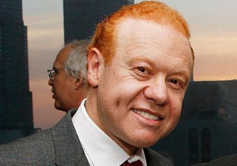

Pratt graduated from Monash University, Melbourne, with a Bachelor of Economics (Hons) in 1983. After graduation he joined the consulting firm of McKinsey & Co, before joining Visy. In 1991 he moved to the United States to spearhead the family’s business expansion into America, where he built Pratt Industries USA into a billion-dollar company which now employs more US citizens than any other Australian company. In 2007 he made a commitment at President Clinton’s Global Initiative in New York City to invest $1 billion in clean energy and recycling infrastructure over the next 10 years.
Pratt is firmly committed to environmental causes, and he and the company have been honored by environmental leaders such as former Vice President Al Gore, former British Prime Minister Tony Blair, Ted Turner, the Climate Group and Global Green for spreading the word that recycling is an important weapon against climate change.
Pratt also sits on the National Board of the Muhammad Ali Museum and Education Center in Louisville, Kentucky, and is active in numerous charity organizations throughout the US and Australia.He prides his time between Melbourne and Atlanta, where Visy and Pratt are headquartered respectively, with his partner Claudine Revere and their two children.